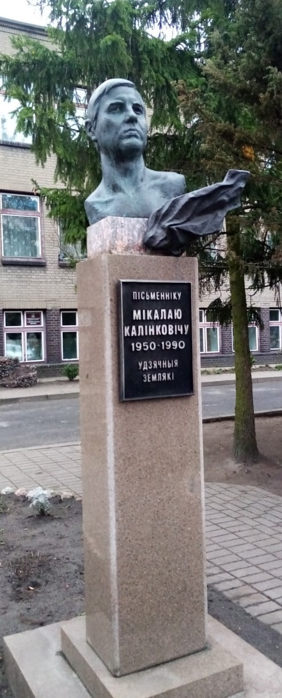

Калинкович Николай Николаевич

Калинкович Николай Николаевич родился в 1950 году в семье рабочего. Учился в Лунинецкой средней школы № 2 (1968). С октября 1968 года - литературный работник Лунинецкой районной газеты «Ленінскі шлях». После окончания факультета журналистики Белорусского государственного университета в 1976- 1978 гг. - заместитель редактора лунинецкой районной газеты. Впервые появился в печати в 1968 году (лунинецкая районная газета). Писал на белорусском и русском языках. Автор историко-документального очерка «Лунинец» (1981, 1989). В 1985 году написал книгу «Палескія дні Аляксандра Блока». Погиб 24 июля 1990 года при исполнении служебных обязанностей в Грузии. Памятник установлен в 2001 году.